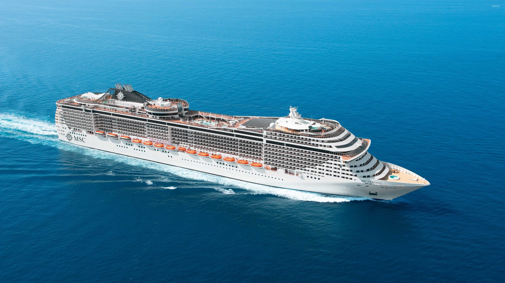

Sommerferien 2025
Im July ist es soweit ich fahre mit meiner Familie in die Ferien.
Wir sind zehn Tage auf der Kreuzfahrt.
Route der Cruise:
| Tag | Reisestation | Ankunft | Abfahrt |
|---|---|---|---|
| 1. | Triest (Italien) | - | 19:00 |
| 2. | Seetag | - | - |
| 3. | Katákolon / Olympia (Griechenland) | 07:00 | 15:00 |
| 4. | Piräus / Athen (Griechenland) | 08:00 | 18:00 |
| 5. | Kusadasi / Ephesus (Türkei) | 07:00 | 15:00 |
| 6. | Istanbul (Türkei) | 10:00 | Istanbul (Türkei) |
| 7. | Seetag | - | - |
| 8. | Kerkyra (Korfu, Griechenland) | 13:00 | 21:00 |
| 9. | Bari (Italien) | 07:00 | 14:00 |
| 10. | Triest (Italien) | 09:00 | - |
Beschreibung der Cruise
Folgende Bilder mit Informationen:
MSC Fantasia – Luxus auf hoher See
Die MSC Fantasia ist ein modernes Kreuzfahrtschiff der MSC-Flotte, das mit elegantem Design und vielen Freizeitangeboten begeistert. Auf dem Schiff gibt es mehrere Pools, erstklassige Restaurants, ein Spa und ein großes Theater. Ideal für alle, die auf See Komfort, Unterhaltung und italienisches Flair genießen wollen.

Triest – Italiens Tor zum Osten
Triest liegt direkt an der Adria nahe der Grenze zu Slowenien und vereint italienisches Flair mit mitteleuropäischer Geschichte. Die Stadt beeindruckt mit dem eleganten Piazza Unità d’Italia, dem Hafen, und dem Schloss Miramare mit Blick aufs Meer. Kaffeehäuser im Habsburgerstil, bunte Märkte und ein Mix aus Kulturen machen Triest besonders charmant und einzigartig.

Bibione – Meer, Natur und Erholung
Bibione liegt an der italienischen Adria und begeistert mit einem langen Sandstrand, ideal für Familien. Neben Sonne und Meer gibt es viel zu entdecken: Flamingos im Naturschutzgebiet Val Grande, ein schöner Leuchtturm am Flussufer und entspannte Stunden in der Therme direkt am Strand. Perfekt für alle, die Natur, Erholung und italienisches Flair suchen.

Katakolon – Das Tor nach Olympia
Katakolon ist ein kleiner, malerischer Hafenort an der Westküste Griechenlands. Bekannt ist er vor allem als Ausgangspunkt für Ausflüge zur antiken Stätte Olympia, wo einst die ersten Olympischen Spiele stattfanden. Im Ort selbst kann man gemütlich an der Uferpromenade spazieren, frischen Fisch essen und den Blick aufs Ionische Meer genießen – perfekt für einen entspannten Tag mit Kultur und Meerblick.

Piräus – Das Tor zur Ägäis
Piräus ist der lebhafte Hafen von Athen und einer der größten in Europa. Von hier aus starten Fähren zu den griechischen Inseln. Neben dem maritimen Trubel bietet Piräus auch Sehenswürdigkeiten wie das Archäologische Museum und den malerischen Yachthafen Mikrolimano mit gemütlichen Tavernen direkt am Wasser. Perfekt für einen Mix aus Stadtleben, Meer und Kultur – nur wenige Minuten von Athen entfernt.

Kuşadası – Sonne, Strand und Antike
Kuşadası ist ein beliebter Ferienort an der türkischen Ägäisküste. Neben schönen Stränden und lebhaften Basaren ist die Stadt auch das Tor zur antiken Ruinenstadt Ephesos, eine der beeindruckendsten Ausgrabungen der Türkei. Die Hafenpromenade lädt zum Bummeln ein, und vom Aussichtspunkt an der Taubeninsel (Güvercinada) hat man einen herrlichen Blick aufs Meer. Ideal für Sonne, Kultur und orientalisches Flair.

Istanbul – Wo Europa auf Asien trifft
Istanbul ist eine faszinierende Metropole, in der Orient und Okzident verschmelzen. Die Stadt beeindruckt mit weltberühmten Sehenswürdigkeiten wie der Hagia Sophia, der Blauen Moschee und dem Großen Basar. Vom Bosporus aus genießt man einen einzigartigen Blick auf zwei Kontinente. Istanbul ist laut, bunt, geschichtsträchtig – und einfach unvergesslich.

Korfu – Die grüne Insel Griechenlands
Korfu ist eine der schönsten griechischen Inseln, bekannt für ihre grünen Hügel, traumhaften Strände und venezianisch geprägte Altstadt. Highlights sind der Achilleion-Palast, malerische Buchten wie Paleokastritsa und die charmante Hauptstadt Kerkyra. Korfu bietet Erholung, Kultur und typisch griechische Gastfreundschaft.

Bari – Das lebendige Tor zu Apulien
Bari ist eine pulsierende Hafenstadt an der Adriaküste Süditaliens. Die Altstadt begeistert mit engen Gassen, der beeindruckenden Basilika San Nicola und einem lebendigen Markt. Vom Hafen starten Fähren nach Griechenland und Kroatien. Bari verbindet Geschichte, Meer und authentisches italienisches Leben.
MustTake With U:
- Kleider:
- Shorts
- Sommerkleider
- Sneakers und Ausgangsschuhe
- Accessoires(Schmuck,Taschen)
- Bikini
- Gym Stuff
- Take everywhere:
- Kamera
- Sonnencrem
- Sonnenbrille
- Wasser
- Bikini
- Labello
- Fächer